Click on "Home" button and then "Menu" button on Emulator. Click on 'Setting'

Select "Application"
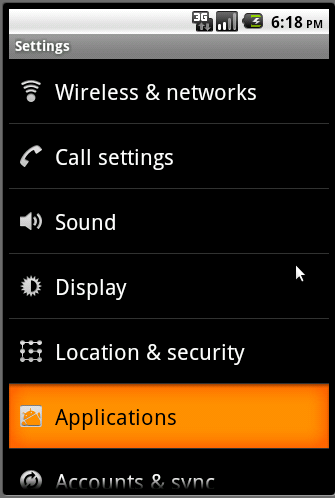Select "Manage applications"

Scroll down until you see "USQTweet"
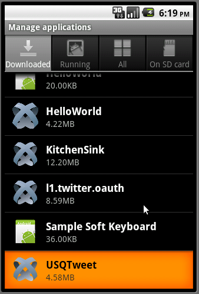Click on "Clear data"
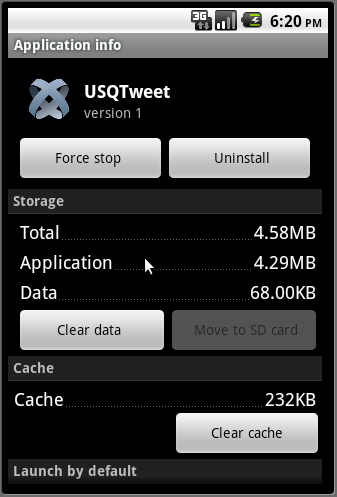USQTweet is a simply twitter client that is created as USQ Mobile Module final assignment. The main requirment for this assingment is to show at least four features of Android mobile platform so this application has very limited features compared to other twitter clients on the market.
User Features
Technical Details
This application is tested under default resolution (normal screens : 470dp x 320dp). According to Android developer page, there are four standard resolutions. The doc mentioned that there are serveal android devices that don't follow those standard resolutions as well. However, the requirement of this assignment is to support at least one resolution so I didn't test my application with differnet resolution. I make sure that the position and layout looks okay in default resolution. I don't add unecessary scrollbars as well.
Click on "Add your twitter account"
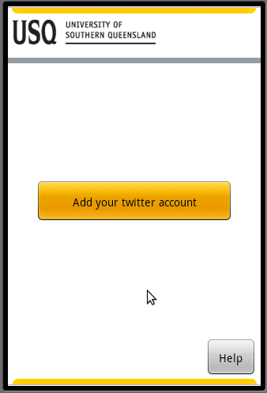The program will call twitter REST API to do the authentication. It will take a few seconds based on your connection and the status of twitter REST API. Note: If it doesn't show anything for long period, please do check the debug information on Titanium Console. Please make sure that you are able to access the internet from your virtual machine and the Twitter API is live. You can check the twitter status from those links ( dev.twitter.com/status and status.twitter.com). As I mentioned, I didn't do any error handling since it's not the part of requirement for this assignment.
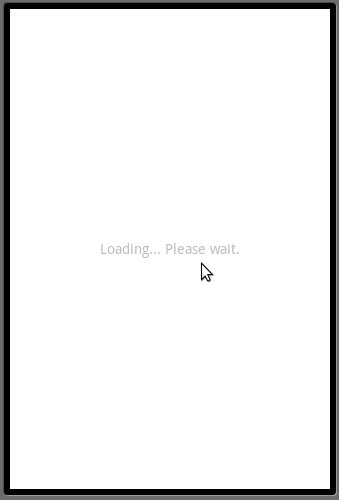You will see this screen. Note that the scren might be a bit different if you login the twitter website before.
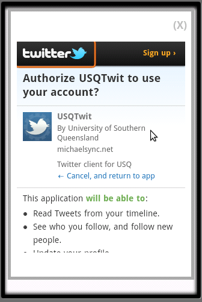Scroll down and enter your twitter user name and password. After that, please click on "Authorize App" button. Note that the Titanium Web View doesn't work really well on emulator (I don't have Andriod phone so I can't test it.) Please make sure that you have entered the correct user name and password and hit the button.
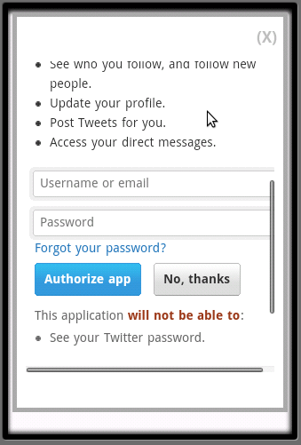It will ask whether you want to let the browser to remember your password. You can choose any button to click based on your preference.
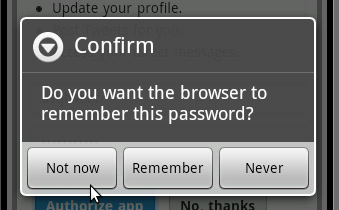Please wait for a while until you see this screen. The program will automatically read the pin. You don't need to do anything.
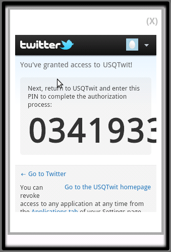Please wait until you see this screen. The program is loading your twitter feed.
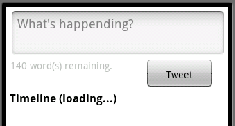Finally, you will see this screen.
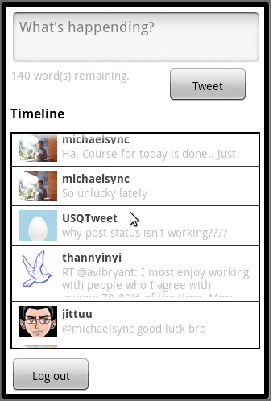Note: If your tweet is so long then you won't be able to see the completed text on the screen. I tried positing the text and alignment but using height:'auto' in one control and specific height in another control doesn't work well in Titanium.
Another thing to note is that the access token, secret and pin will be saved in isoloated storage so you won't need to login again when you open the application next time.If you want to delete the saved information, plesae refer to "How to clean Isolated storage" section.
Once you authorized the application to access your twitter account, you can revoke the permission at anytime. There are serveal different ways to revoke the access but I recommend you to follow the following steps to revoke the access of the application that you've authorized.
Click on "Home" button and then "Menu" button on Emulator. Click on 'Setting'
Select "Application"
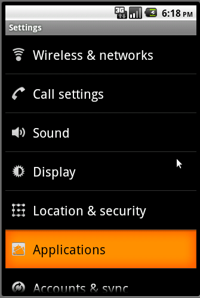Select "Manage applications"
Scroll down until you see "USQTweet"
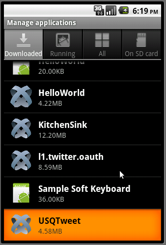Click on "Clear data"
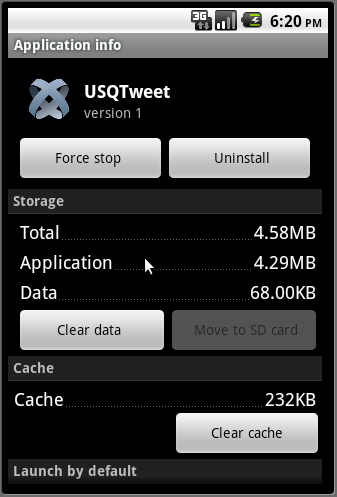